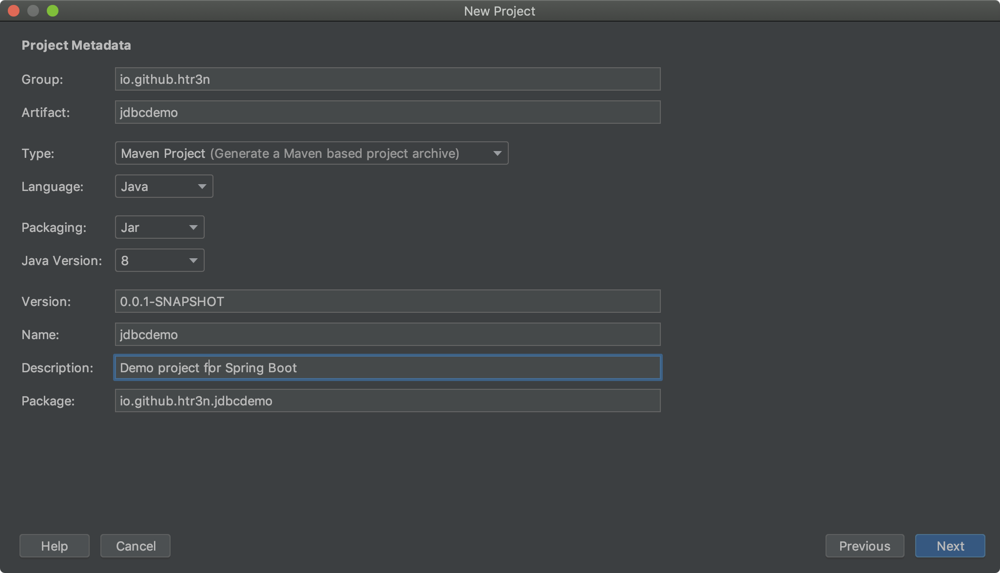
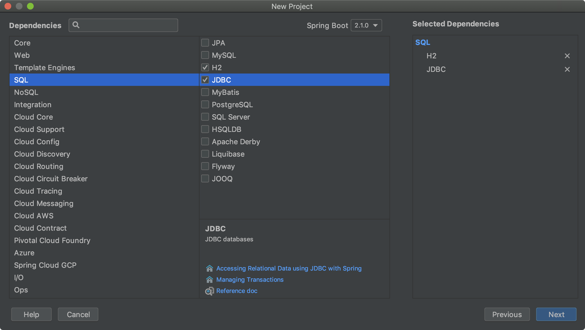
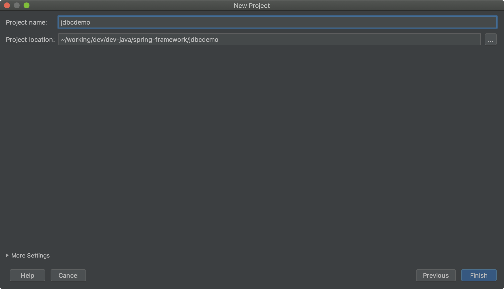
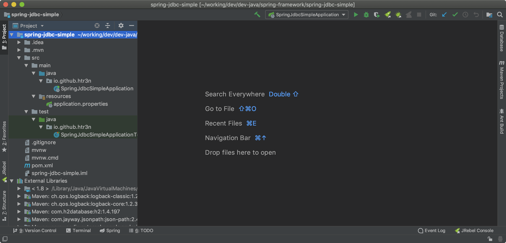

Spring is a popular heavy-weight framework for developing Java/Groovy based applications. Its rich libraries and software stack can cover from front-end to back-end development. In 2009 I used Spring Framework 3 to develop web services and MVC+Hibernate portal for a fictious loan approval process. Despite a tad steep learning-curve, I could manage to get the services and portal up and running and integrated with third-party libraries quite smoothly.
In my prevous projects, I mostly used Spring with Hibernate and/or JPA for higher abstraction level of data access. Coming back to work with Spring after few years, I want to delve into lower layer of data access to better understand what behind the scene of Hibernate/JPA abstraction layers. This post is sort of my note-to-self on Spring and JDBC (Java Database Connectivity), especially on JdbcTemplate.
Background
JDBC defines standard vendor-independent application programming interface (API) based on that a client can access a database. Each database vendor often provides low-level vendor-specific database drivers based on JDBC predefined interfaces. JDBC is considered the lowest recommended abstraction level to work with databases in Java.
In short, a typical approach to database access using JDBC comprises these basic steps:
- Obtain a Connection, e.g. via DriverManager or DataSource
- Create an instance of type Statement or its sub-types such as CallableStatement, PreparedStatement
- Use the aforementioned statement to execute database queries
- (Optional) Retrieve and process the ResultSet (if any)
- Close the statement and release all resources (connection is AutoCloseable)
Along these steps, we should also handle any database exceptions as well. You can find more details on JDBC programming here. Here is a simple example of accessing databases using JDBC and try-with-resources.
Spring JDBC
Fortunately, Spring, via JdbcTemplate, ofters a higher level of abstraction on top of Java JDBC that would save us a lot of boiler plate code and enable smooth integration with the rest of Spring framework’s ecosystem.As such, we can leverage other parts of Spring farmework, for instance, the awesome Spring Boot, to automate lots of configurations as well as to handle exceptions.
A simple CRUD project with Spring JDBC
Nothing is better than a hand-on development project that demonstrate how Spring JDBC works. We can start with Spring Initialzr and Spring Boot to jump start and better concentrate on the main code instead of numerous dependencies and configurations.
There are a few ways to bootstrap our project with Spring Initialzr. Most of the popular Java IDE such as Eclipse or Intellij IDEA with Spring extensions can create a new project via Spring Initialzr. You can also achieve the same result from the web site https://start.spring.io or even using Spring Boot CLI.
Here I will use Intellij IDEA for just showing the necessary steps and dependencies. You can use any of the aforementioned methods to obtain the same result.





Defining Domain Entities
Configuring Data Sources
CRUD on Domain Entities
Project Source
You can download and start right away with the demo project in Github.